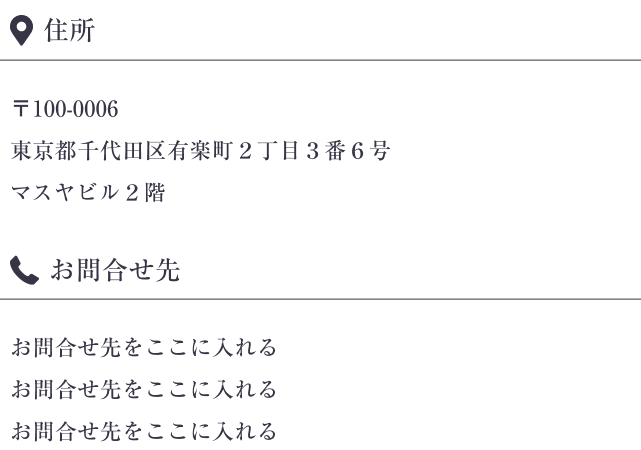

<!DOCTYPE html>
<html lang="en">
<head>
	<meta charset="UTF-8">
	<meta name="viewport" content="width=device-width, initial-scale=1, maximum-scale=1">
	<title>LP_Tadasu</title>
	<link rel="stylesheet" href="assets/css/lp-custom.css">
	<link rel="shortcut icon" type="image/x-icon" href="assets/images/favicon.ico" />
</head>
<body>
	<div id="lp-tadasu">
		<!-- header -->
		<header class="header">
			<div class="header-container">
				<div class="header-top">
					<a href="#" class="logo">
						
					</a>
					<a href="#" class="header-btn">
						
					</a>
				</div>
				<div class="header-content">
					
				</div>
			</div>
		</header>
		<!-- point -->
		<section class="point">
		</section>
		<!-- improve -->
		<section class="improve">
			
		</section>
		<!-- anshin -->
		<section class="anshin">
		</section>
		<!-- voice -->
		<section class="voice">

		</section>
		<!-- check -->
		<section class="check">

		</section>
		<!-- token -->
		<section class="token">

		</section>
		<!-- card -->
		<section class="card">

		</section>
		<!-- ready -->
		<section class="ready">
		</section>
		<!-- about -->
		<section class="about">
			<div class="about-container">
				
				
				
				
			</div>
		</section>
		<!-- flow -->
		<section class="flow">

		</section>
		<!-- expert -->
		<section class="expert">

		</section>
		<!-- faq -->
		<section class="faq">

		</section>
		<!-- footer -->
		<footer class="footer">
			<div class="footer-container">
				
				
				<div class="map">
					<iframe src="https://www.google.com/maps/embed?pb=!1m16!1m12!1m3!1d3240.638547367179!2d139.75919687532578!3d35.673189430416436!2m3!1f0!2f0!3f0!3m2!1i1024!2i768!4f13.1!2m1!1s2-3-6%20Yurakucho%2C%20Chiyoda-ku%2C%20Tokyo%20T%C3%B2a%20nh%C3%A0%20Masuya%20t%E1%BA%A7ng%202!5e0!3m2!1svi!2s!4v1727684492150!5m2!1svi!2s" width="600" height="450" style="border:0;" allowfullscreen="" loading="lazy" referrerpolicy="no-referrer-when-downgrade"></iframe>
				</div>
				
				
			</div>
		</footer>
	</div>
	<script src="assets/js/jquery-3.5.0.min.js"></script>
	<script src="assets/js/lp-custom.js"></script>
</body>
</html>